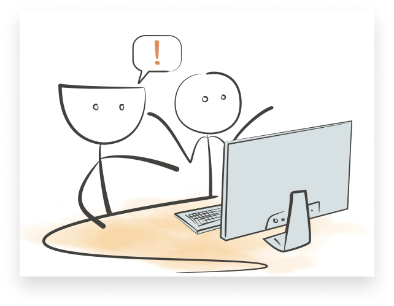

Что же это такое,
когнитивные искажения?
Что такое когнитивные искажения. Petrovna Channel

Когнитивные искажения
Эффект ИКЕА
Вы переоцениваете собственные решения, и, как следствие, недооцениваете решения других.
Как проявляется
Когнитивное искажение называется так из-за того, что потребители зачастую предпочитают покупать товары, которые они могут собрать сами, а не уже собранные кем-то.
Мы склонны переоцнивать наши собственные решения и недооценивать решения других. Если вы когда-то работали в компании, которая использовала тупой внутренний инструмент вместо более удобного готового решения, вы понимаете, о чём я говорю.